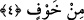

3. Onlar şu evin Rabbine kulluk etsinler.
4. Kendilerini açlıktan doyuran ve her çeşit korkudan emin kılan (şu evin
Rabbine)
Hareminin sâkini ve komşuları olmaları sâyesinde iki yolculuk fırsatını elde ettikleri
için onları, eskiden çektikleri şiddetli “açlıktan doyuran ve” dayanılamayacak büyük
“korkudan emniyette kılan.”
Derler ki; Hz. İbrahim (a.s.)’ın duâsı sebebiyle, oraya her yerden meyveler gelir, bu
şekilde açlık çekmezler.
Kureyşliler, Amr el-Ulâ -ki az evvel ismi geçen Hâşim’dir- kendilerini o iki
yolculuğa yönlendirinceye kadar açlık çektiler.
Ebû Hayyân’ın ifâdesine göre, burada geçen “min” harf-i cerri sebep bildirmektedir.
Buna göre âyetin mânâsı, “...aç oldukları için doyurdu” demek olur.
Sa‘dî Muftî der ki, “el-Cû‘/açlık” kelimesi, “el-İt‘âm/doyurma” kelimesi ile bir
arada bulunmaz. Zâhir olan, bu kelimenin bedel olmasıdır. Fakîr (Bursevî) der ki bu
âyetin mânâsı şöyledir: Allah Teâlâ, doyurmak ve rızıklandırmak sûretiyle onları
açlıktan kurtardı.
Âyette sözü edilen “korku”, Fîl Ashâbı’ndan duyulan korkudur. Veya memleketlerinde
ve yollarda yağmalanma ve soyulma korkusudur.
el-Kitâb sâhibi der ki: “An” harf-i cerri ile “min” harf-i cerri arasındaki fark şudur:
“An” yedirmekle ortadan kalkan bir açlığın meydana gelmiş olmasını gerektirir. “Min”
ise açlığın hiç gelmediğini ifâde eder. Buna göre mânâ: Allah Teâlâ onları doyurdu,
onlara önce ve sonra hiç açlık musallat olmadı, onları emniyette kıldı, önce ve sonra
başlarına hiç korku gelmedi şeklinde olur. Yâni onları, açlıkları başlarken daha
kendilerine gelmeden doyurdu ve korkuları başlarken daha kendilerine gelmeden
emniyette kıldı.
Keşşâf ’ta nakledildiğine göre bid‘at tefsirlerde şöyle denir: “Hılâfetin başkasında
olması korkusundan onları emîn kıldı.”
Ebû Tâlib’in kızı Ümmü Hânî’den rivâyet edildiğine göre Kureyş’in fazîletleri yedi
madde hâlinde sıralanabilir. Bu fazîletler Kureyşlilerden önce hiç kimseye verilmiş
değildir. Bunlar: Nübüvvet, hilâfet, Kâbe’nin perdedarlığı, hacılara su ikrâm etme, Fil
Ordusu’na karşı yardım edilme, Allah’a yedi yıl, -bazı rivâyetlerde on yıl- kulluk etmek
ki bu süre zarfında onlardan başka hiç kimse kulluk etmemiştir. Son olarak onlar
hakkında Kur’ân’da bir sûre inmiştir ki o sûrede onlardan başka hiç kimse
zikredilmemiştir.[228]
Bu rivâyette “li-Îlâfi Kureyş”e sûre denmesi, “Fîl Sûresi li-Îlâfi Kureyş bir tek
sûredir” şeklindeki iddiâyı reddeder. Rivâyette ifâde edilen müddet zarfında onların
Allah’a ibâdet edip başkalarının etmemesinin ne mânâya geldiği araştırmaya muhtâctır.
Fakîr (Bursevî)’ye göre Allah Teâlâ burada: “Kureyş” kelimesi ile, müşrik nefse,